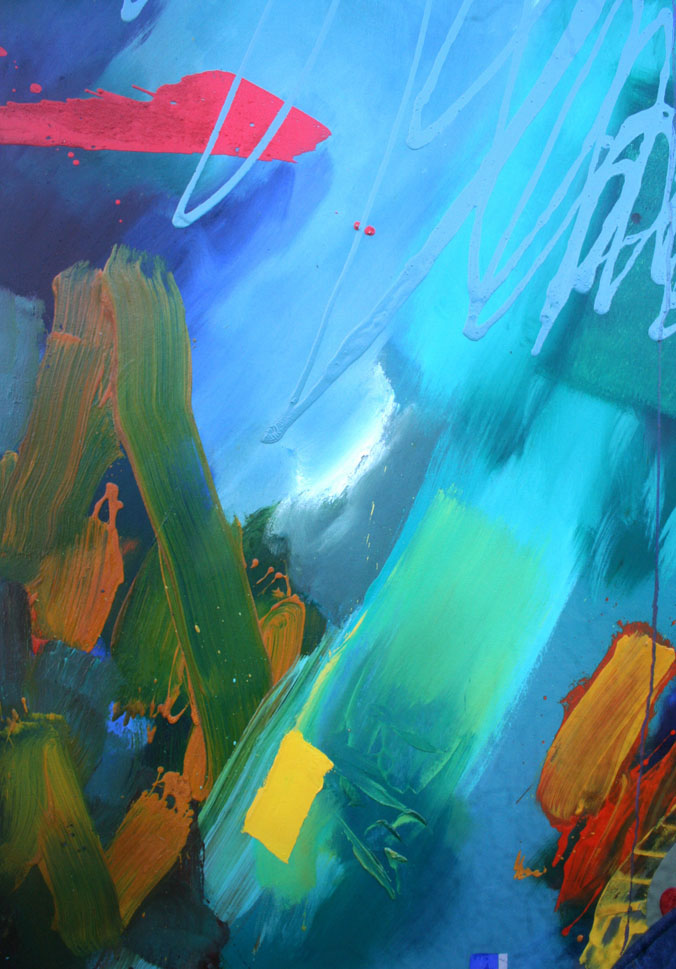

David Weaver

Mae adeiladwaith peintio a phrydferthwch y byd naturiol yn ysbrydoli’r gweithiau cyfoethog yma.
Mae’r wefr yn amlwg ac yn heintus. Mwynhewch.
The building blocks of painting matched with the outstanding beauty of the natural world inform these intensely rich and vibrant compositions.
The excitement is palpable and contagious. Enjoy.
01407 710842 / 07979 151213
weaverdavid797@gmail.com
Facebook: David Weaver Art
MORLAIS, CEMAES BAY, LL67 0DA
Tŷ melyn wrth ymyl troiad i’r Wylfa. Lle i ddau gar barcio. Mae’r ffordd yn brysur, felly byddwch yn ofalus. Fel arall, parciwch ar hen lôn Tregele, mynediad o Tafarn y Douglas.
Pale yellowish house by turning for Wylfa. Parking for two cars in drive. Busy road so be careful. Otherwise, parking along disused road, entrance from Douglas Inn, Tregele.